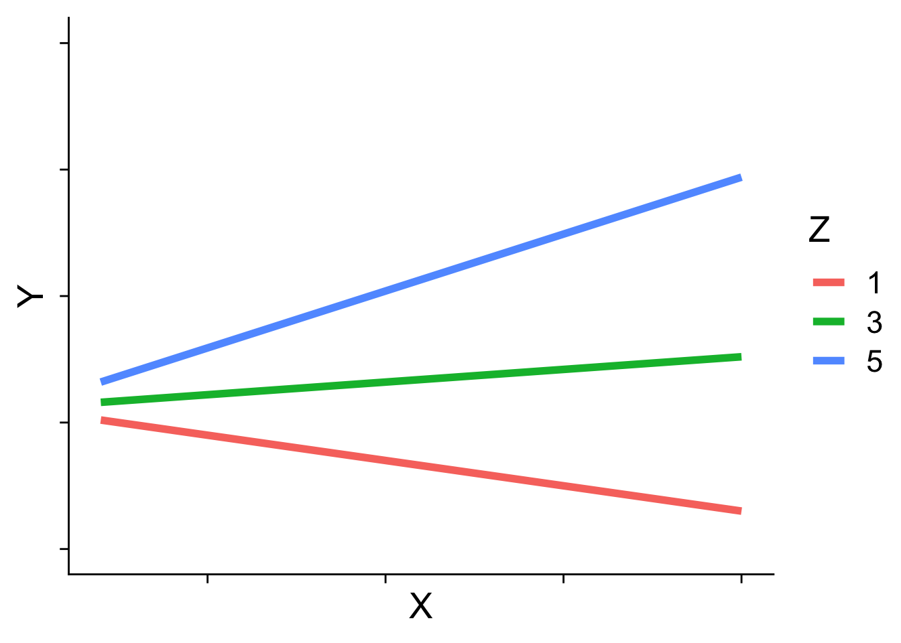
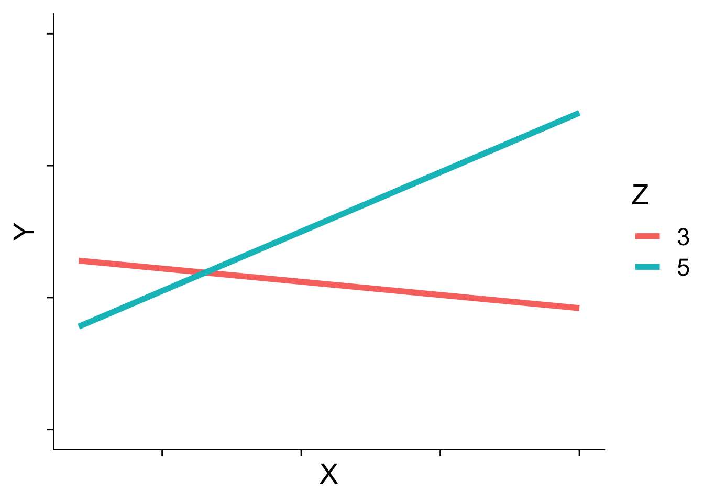
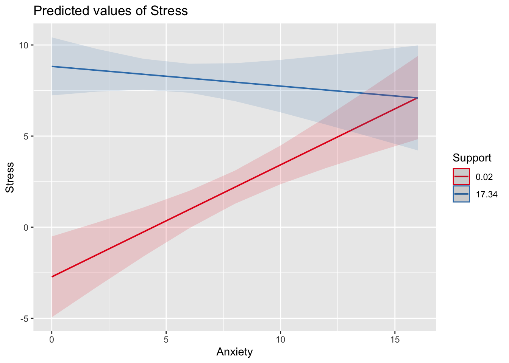
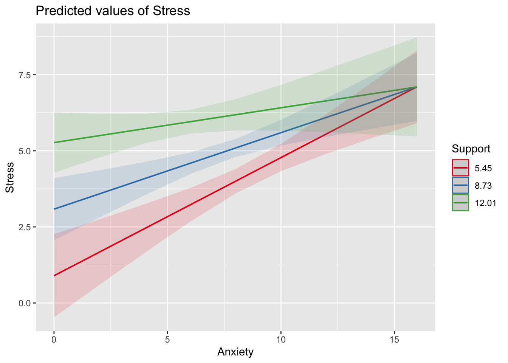
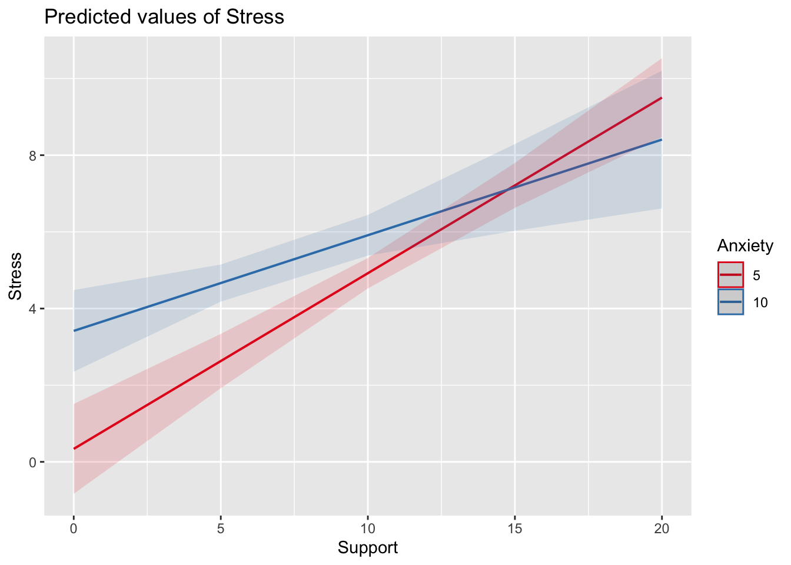
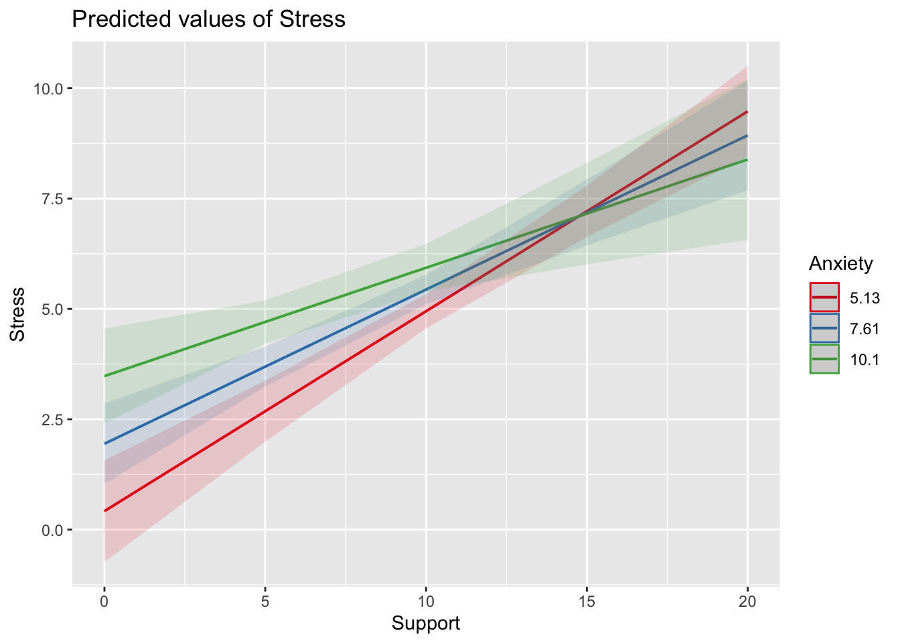

When we have two variables, A and B, in a regression model, we are testing whether these variables have additive effects on our outcome, Y. That is, the effect of A on Y is constant over all values of B.
Example: Drinking coffee and hours of sleep have additive effects on alertness; no matter how any hours I slept the previous night, drinking one cup of coffee will make me .5 SD more awake than not drinking coffee.
What are interactions?
However, we may hypothesize that two variables have joint effects, or interact with each other. In this case, the effect of A on Y changes as a function of B.
Example: Chronic stress has a negative impact on health but only for individuals who receive little or no social support; for individuals with high social support, chronic stress has no impact on health.
This is also referred to as moderation.
Univariate regression
Code
library(tidyverse)
── Attaching core tidyverse packages ──────────────────────── tidyverse 2.0.0 ──
✔ dplyr 1.1.4 ✔ readr 2.1.5
✔ forcats 1.0.0 ✔ stringr 1.5.1
✔ ggplot2 3.5.1 ✔ tibble 3.2.1
✔ lubridate 1.9.4 ✔ tidyr 1.3.1
✔ purrr 1.0.2
── Conflicts ────────────────────────────────────────── tidyverse_conflicts() ──
✖ dplyr::filter() masks stats::filter()
✖ dplyr::lag() masks stats::lag()
ℹ Use the conflicted package (<http://conflicted.r-lib.org/>) to force all conflicts to become errors
We shall return to the data we used in the multiple regression model with two continuous variables. Here we have an outcome (Stress) that we are interested in predicting from trait Anxiety and levels of Social Support.
Code
library(here)
here() starts at /Users/jackson/Library/CloudStorage/Box-Box/GLM_3890/2025
The following objects are masked from 'package:ggplot2':
%+%, alpha
Code
describe(stress.data)
vars n mean sd median trimmed mad min max range skew
id 1 118 488.65 295.95 462.50 485.76 372.13 2.00 986.00 984.00 0.10
Anxiety 2 118 7.61 2.49 7.75 7.67 2.26 0.70 14.64 13.94 -0.18
Stress 3 118 5.18 1.88 5.27 5.17 1.65 0.62 10.32 9.71 0.08
Support 4 118 8.73 3.28 8.52 8.66 3.16 0.02 17.34 17.32 0.18
group* 5 118 1.53 0.50 2.00 1.53 0.00 1.00 2.00 1.00 -0.10
kurtosis se
id -1.29 27.24
Anxiety 0.28 0.23
Stress 0.22 0.17
Support 0.19 0.30
group* -2.01 0.05
i.model1 =lm(Stress ~ Anxiety + Support + Anxiety:Support, data = stress.data)i.model2 =lm(Stress ~ Anxiety*Support, data = stress.data)
Both methods of specifying the interaction above will work in R. Using the * tells R to create both the (partial) main effects and interaction effect. Note, however that the following code gives you the wrong results:
imodel_bad =lm(Stress ~ Anxiety:Support, data = stress.data) # this does not create main effects. #It is VERY WRONG
Code
i.model1 =lm(Stress ~ Anxiety*Support, data = stress.data)summary(i.model1)
Call:
lm(formula = Stress ~ Anxiety * Support, data = stress.data)
Residuals:
Min 1Q Median 3Q Max
-3.8163 -1.0783 0.0373 0.9200 3.6109
Coefficients:
Estimate Std. Error t value Pr(>|t|)
(Intercept) -2.73966 1.12101 -2.444 0.01606 *
Anxiety 0.61561 0.13010 4.732 6.44e-06 ***
Support 0.66697 0.09547 6.986 2.02e-10 ***
Anxiety:Support -0.04174 0.01309 -3.188 0.00185 **
---
Signif. codes: 0 '***' 0.001 '**' 0.01 '*' 0.05 '.' 0.1 ' ' 1
Residual standard error: 1.462 on 114 degrees of freedom
Multiple R-squared: 0.4084, Adjusted R-squared: 0.3928
F-statistic: 26.23 on 3 and 114 DF, p-value: 5.645e-13
Conceptual interpretation
\[\hat{Y} = b_{0} + b_{1}X + b_{2}Z + b_{3}XZ\]
You can interpret the interaction term in the same way you normally interpret a slope coefficient – this is the effect of the interaction controlling for other variables in the model.
You can also interpret the intercept the same way as before (the expected value of Y when all predictors are 0).
But here, \(b_1\) is the effect of X on Y when Z is equal to 0.
Conceptual interpretation
\[\hat{Y} = b_{0} + b_{1}X + b_{2}Z + b_{3}XZ\]
Lower-order terms change depending on the values of the higher-order terms. The value of \(b_1\) and \(b_2\) will change depending on the value of \(b_3\).
These values represent “conditional effects” (because the value is conditional on the level of the other variable). In many cases, the value and significance test with these terms is either meaningless (if Z is never equal to 0) or unhelpful, as these values and significance change across the data.
Conceptual interpretation
\[\hat{Y} = b_{0} + b_{1}X + b_{2}Z + b_{3}XZ\]
Higher-order terms are those terms that represent interactions. \(b_3\) is a higher-order term. - This value represents how much the slope of X changes for every 1-unit increase in Z AND how much the slope of Z changes for everyone 1-unit increase in X.
???
Is \(b_0\) a higher-order or lower-order term?
Ask what values \(b_0\) depends on – both intercept and slope. Maybe be helpful to use paper to represent plane.
Conceptual interpretation
Higher-order interaction terms represent: - the change in the slope of X as a function of Z - the degree of curvature in the regression plane - the linear effect of the product of independent variables
summary(lm(Stress ~ Anxiety + Support + AxS, data = stress.data))
Call:
lm(formula = Stress ~ Anxiety + Support + AxS, data = stress.data)
Residuals:
Min 1Q Median 3Q Max
-3.8163 -1.0783 0.0373 0.9200 3.6109
Coefficients:
Estimate Std. Error t value Pr(>|t|)
(Intercept) -2.73966 1.12101 -2.444 0.01606 *
Anxiety 0.61561 0.13010 4.732 6.44e-06 ***
Support 0.66697 0.09547 6.986 2.02e-10 ***
AxS -0.04174 0.01309 -3.188 0.00185 **
---
Signif. codes: 0 '***' 0.001 '**' 0.01 '*' 0.05 '.' 0.1 ' ' 1
Residual standard error: 1.462 on 114 degrees of freedom
Multiple R-squared: 0.4084, Adjusted R-squared: 0.3928
F-statistic: 26.23 on 3 and 114 DF, p-value: 5.645e-13
Code
summary(lm(Stress ~ Anxiety*Support, data = stress.data))
Call:
lm(formula = Stress ~ Anxiety * Support, data = stress.data)
Residuals:
Min 1Q Median 3Q Max
-3.8163 -1.0783 0.0373 0.9200 3.6109
Coefficients:
Estimate Std. Error t value Pr(>|t|)
(Intercept) -2.73966 1.12101 -2.444 0.01606 *
Anxiety 0.61561 0.13010 4.732 6.44e-06 ***
Support 0.66697 0.09547 6.986 2.02e-10 ***
Anxiety:Support -0.04174 0.01309 -3.188 0.00185 **
---
Signif. codes: 0 '***' 0.001 '**' 0.01 '*' 0.05 '.' 0.1 ' ' 1
Residual standard error: 1.462 on 114 degrees of freedom
Multiple R-squared: 0.4084, Adjusted R-squared: 0.3928
F-statistic: 26.23 on 3 and 114 DF, p-value: 5.645e-13
They’re the same!!
Conditional effects and simple slopes
The regression line estimated in this model is quite difficult to interpret on its own. A good strategy is to decompose the regression equation into simple slopes, which are determined by calculating the conditional effects at a specific level of the moderating variable.
Simple slope: the equation for Y on X at different levels of Z; but also refers to only the coefficient for X in this equation
Conditional effect: the slope coefficients in the full regression model which can change. These are the lower-order terms associated with a variable. E.g., X has a conditional effect on Y.
Which variable is the “predictor” (X) and which is the “moderator” (Z)?
The conditional nature of these effects is easiest to see by “plugging in” different values for one of your variables. Return to the regression equation estimated in our stress data:
Code
imodel =lm(Stress ~ Anxiety*Support, data = stress.data)C.vector =coef(summary(imodel))[,1]C.round =round(C.vector,2)
Set Support to 5\[
\begin{aligned}
\hat{Stress} &= -2.74 + 0.62(\text{Anx})+ 0.67(5)+ -0.04(\text{Anx} \times 5) \\
&= -2.74 + 0.62(\text{Anx})+ 3.35+ -0.2(\text{Anx}) \\
&= 0.61 + 0.42(\text{Anx})
\end{aligned}
\]
Set Support to 10\[
\begin{aligned}
\hat{Stress} &= -2.74 + 0.62(\text{Anx})+ 0.67(10)+ -0.04(\text{Anx} \times 10) \\
&= -2.74 + 0.62(\text{Anx})+ 6.7+ -0.4(\text{Anx}) \\
&= 3.96 + 0.22(\text{Anx})
\end{aligned}
\]
Interaction shapes
Often we graph the simple slopes as a way to understand the interaction. Interpreting the shape of an interaction can be done using the numbers alone, but it requires a lot of calculation and mental rotation. For those reasons, consider it a requirement that you graph interactions in order to interpret them.
Ordinal interactions
Code
x =1:10y1 = .7+ .9*xy2 = .6+ .2*xy3 = .5- .4*xdata.frame(x =rep(x, 3), y =c(y1,y2,y3), group =rep(c(5, 3, 1),each =10)) %>%ggplot(aes(x,y,color =as.factor(group))) +geom_line(size =2) +labs(x ="X", y ="Y", color ="Z") +scale_x_continuous(labels =NULL) +scale_y_continuous(labels =NULL, limit =c(-5, 15)) + cowplot::theme_cowplot(font_size =20)
Warning: Using `size` aesthetic for lines was deprecated in ggplot2 3.4.0.
ℹ Please use `linewidth` instead.

Cross-over (disordinal) interactions
Code
x =1:10y1 =-2+ .9*xy2 =1.6- .2*xdata.frame(x =rep(x, 2), y =c(y1,y2), group =rep(c(5, 3),each =10)) %>%ggplot(aes(x,y,color =as.factor(group))) +geom_line(size =2) +labs(x ="X", y ="Y", color ="Z") +scale_x_continuous(labels =NULL) +scale_y_continuous(labels =NULL, limit =c(-5, 10)) + cowplot::theme_cowplot(font_size =20)

Code
library(sjPlot)
Install package "strengejacke" from GitHub (`devtools::install_github("strengejacke/strengejacke")`) to load all sj-packages at once!
Code
plot_model(imodel, type ="int")

Code
plot_model(imodel, type ="int", mdrt.values ="meansd")

Code
plot_model(imodel, type ="pred", terms =c("Support", "Anxiety[5,10]"))

Code
plot_model(imodel, type ="pred", terms =c("Support", "Anxiety"), mdrt.values ="meansd")

Pop Quiz
You are interested in the effects of “brain games” (or cognitive training) and sleep on the development of Alzheimer’s disease. You hypothesize that cognitive training might aid in slowing the progression of AD if participants are well rested.
Write out the regression equation. Which variable is the moderator?
Interpret the coefficients.
Sketch out a plot of the simple slopes. There are different ways of doing this reflecting different hypotheses, but make sure the hypothesis stated above is somehow shown. You can do this on a post-it/scratch paper (I don’t have real data for this, so there’s nothing to make in R unless you want to simulate your own data…but that’s a bit much for a 0-point pop quiz)
Simple slopes - Significance tests
Recall that the slope at any particular value is a combination of both \(b_1\) and \(b_3\)\[\large \hat{Y} = (b_{0} + b_{2}Z) + (b_{1} + b_{3}Z)X\]\[\large se_{b@z} = \sqrt{se_{b_1}^2 + (2 * Z * cov_{b_1b_3})+ (Z^2 se_{b_3}^2)}\] In this formula, \(cov_{b_1b_3}\) refers to the covariance of the coefficients, not the covariance of the variables. This may seem a strange concept, as we only ever have one value for \(b_1\) and \(b_3\) – the covariance of these coefficients refer to idea that if we randomly sample from a population, estimate the coefficients each time, and then examine the covariance of coefficients across random samples, it will not be 0.
If you don’t list levels, then this function will test simple slopes at the mean and 1 SD above and below the mean.
Centering
The regression equation built using the raw data is not only difficult to interpret, but often the terms displayed are not relevant to the hypotheses we’re interested. - \(b_0\) is the expected value when all predictors are 0, but this may never happen in real life - \(b_1\) is the slope of X when Z is equal to 0, but this may not ever happen either.
Centering your variables by subtracting the mean from all values can improve the interpretation of your results. - Remember, a linear transformation does not change associations (correlations) between variables. In this case, it only changes the interpretation for some coefficients
summary(lm(Stress ~ Anxiety.c*Support.c, data = stress.data))
Call:
lm(formula = Stress ~ Anxiety.c * Support.c, data = stress.data)
Residuals:
Min 1Q Median 3Q Max
-3.8163 -1.0783 0.0373 0.9200 3.6109
Coefficients:
Estimate Std. Error t value Pr(>|t|)
(Intercept) 4.99580 0.14647 34.108 < 2e-16 ***
Anxiety.c 0.25122 0.06489 3.872 0.000181 ***
Support.c 0.34914 0.05238 6.666 9.82e-10 ***
Anxiety.c:Support.c -0.04174 0.01309 -3.188 0.001850 **
---
Signif. codes: 0 '***' 0.001 '**' 0.01 '*' 0.05 '.' 0.1 ' ' 1
Residual standard error: 1.462 on 114 degrees of freedom
Multiple R-squared: 0.4084, Adjusted R-squared: 0.3928
F-statistic: 26.23 on 3 and 114 DF, p-value: 5.645e-13
What changed? What stayed the same?
Code
summary(imodel)
Call:
lm(formula = Stress ~ Anxiety * Support, data = stress.data)
Residuals:
Min 1Q Median 3Q Max
-3.8163 -1.0783 0.0373 0.9200 3.6109
Coefficients:
Estimate Std. Error t value Pr(>|t|)
(Intercept) -2.73966 1.12101 -2.444 0.01606 *
Anxiety 0.61561 0.13010 4.732 6.44e-06 ***
Support 0.66697 0.09547 6.986 2.02e-10 ***
Anxiety:Support -0.04174 0.01309 -3.188 0.00185 **
---
Signif. codes: 0 '***' 0.001 '**' 0.01 '*' 0.05 '.' 0.1 ' ' 1
Residual standard error: 1.462 on 114 degrees of freedom
Multiple R-squared: 0.4084, Adjusted R-squared: 0.3928
F-statistic: 26.23 on 3 and 114 DF, p-value: 5.645e-13
Standardized regression equation
So far, we’ve only discussed the unstandardized regression equation. If you’re interested in getting the standardized regression equation, you can follow the same procedure of standardizing your variables first and then entering them into your linear model.
An important note: You must take the product of the Z-scores, not the Z-score of the products to get the correct regression model.